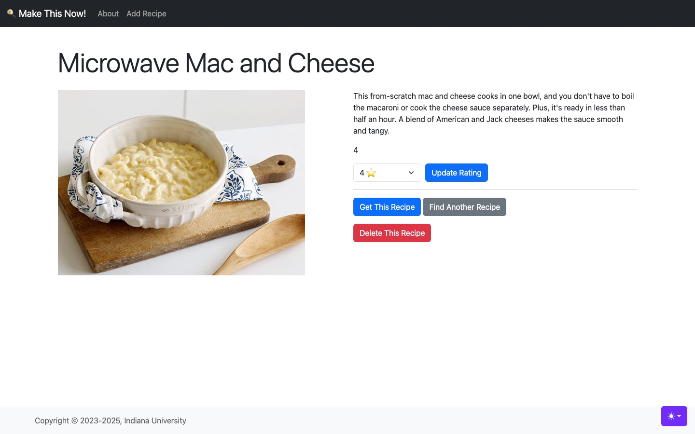
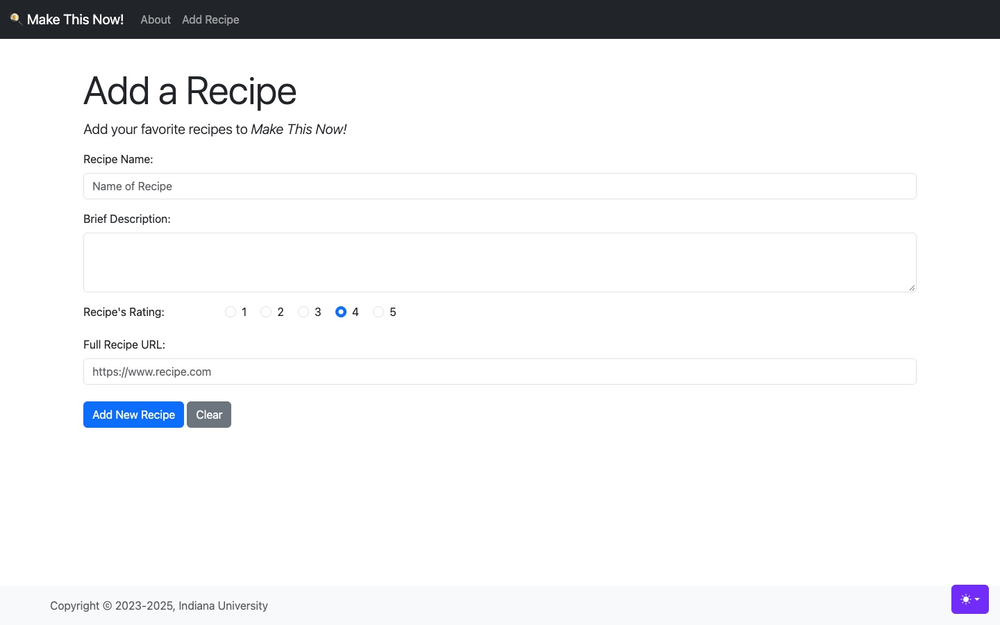

Why I built it
One recipe app, built by every student, to learn Python, Flask and Jinja templates.
Make This Now! was the main project in INFO-I211. Everyone in the class built the same recipe app with the same design, so the focus was the back end: storing recipes in a database and using Python to turn them into pages.
My role
Make This Now! was a solo project for INFO-I211. I independently built and deployed it.
What I built
- A home page for browsing every recipe
- A page for each recipe
- A form for adding new recipes
- Ratings for each recipe
- Deleting recipes you no longer want




Building it
Learning Jinja: one template, every recipe.
Make This Now! is a Python and Flask app, with Jinja2 templates and a SQL database. It's deployed on Railway.
The challenge was learning Jinja. Instead of writing a page for every recipe, I wrote one recipe template, and Jinja fills in each recipe's name, photo, description and rating from the database. The home page works the same way, looping over every recipe to build the list.
Reflection
Templates changed how I think about pages: design one layout well, then let the data fill it in. It's the same idea as a component in Figma, and it's why I like designing with how something will be built in mind.